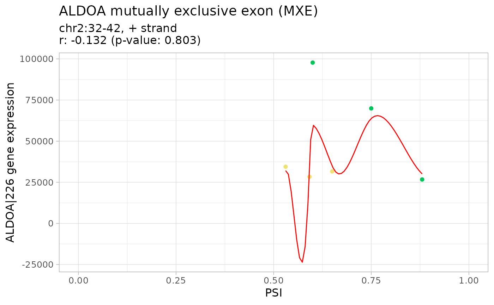
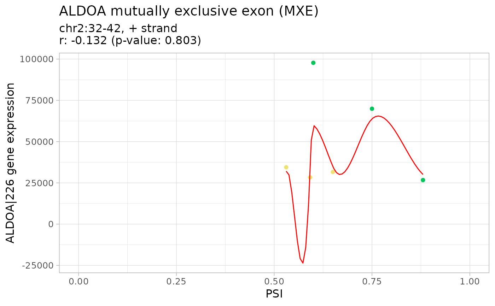

Plot, print and display as table the results of gene expression and alternative splicing
Usage
# S3 method for GEandAScorrelation
[(x, genes = NULL, ASevents = NULL)
# S3 method for GEandAScorrelation
plot(
x,
autoZoom = FALSE,
loessSmooth = TRUE,
loessFamily = c("gaussian", "symmetric"),
colour = "black",
alpha = 0.2,
size = 1.5,
loessColour = "red",
loessAlpha = 1,
loessWidth = 0.5,
fontSize = 12,
...,
colourGroups = NULL,
legend = FALSE,
showAllData = TRUE,
density = FALSE,
densityColour = "blue",
densityWidth = 0.5
)
# S3 method for GEandAScorrelation
print(x, ...)
# S3 method for GEandAScorrelation
as.table(x, pvalueAdjust = "BH", ...)Arguments
- x
GEandAScorrelationobject obtained after runningcorrelateGEandAS()- genes
Character: genes
- ASevents
Character: AS events
- autoZoom
Boolean: automatically set the range of PSI values based on available data? If
FALSE, the axis relative to PSI values will range from 0 to 1- loessSmooth
Boolean: plot a smooth curve computed by
stats::loess.smooth?- loessFamily
Character: if
gaussian,loessfitting is by least-squares, and ifsymmetric, a re-descending M estimator is used- colour
Character: points' colour
- alpha
Numeric: points' alpha
- size
Numeric: points' size
- loessColour
Character: loess line's colour
- loessAlpha
Numeric: loess line's opacity
- loessWidth
Numeric: loess line's width
- fontSize
Numeric: plot font size
- ...
Arguments passed on to
stats::loess.smoothspansmoothness parameter for
loess.degreedegree of local polynomial used.
evaluationnumber of points at which to evaluate the smooth curve.
- colourGroups
List of characters: sample colouring by group
- legend
Boolean: show legend for sample colouring?
- showAllData
Boolean: show data outside selected groups as a single group (coloured based on the
colourargument)- density
Boolean: contour plot of a density estimate
- densityColour
Character: line colour of contours
- densityWidth
Numeric: line width of contours
- pvalueAdjust
Character: method used to adjust p-values (see Details)
Details
The following methods for p-value adjustment are supported by using the
respective string in the pvalueAdjust argument:
none: do not adjust p-valuesBH: Benjamini-Hochberg's method (false discovery rate)BY: Benjamini-Yekutieli's method (false discovery rate)bonferroni: Bonferroni correction (family-wise error rate)holm: Holm's method (family-wise error rate)hochberg: Hochberg's method (family-wise error rate)hommel: Hommel's method (family-wise error rate)
See also
Other functions to correlate gene expression and alternative splicing:
correlateGEandAS()
Other functions to correlate gene expression and alternative splicing:
correlateGEandAS()
Examples
annot <- readFile("ex_splicing_annotation.RDS")
junctionQuant <- readFile("ex_junctionQuant.RDS")
psi <- quantifySplicing(annot, junctionQuant, eventType=c("SE", "MXE"))
#> Using 3 of 3 events (100%) whose junctions are present in junction quantification data...
#> | | 0%
|======== | 20%
|================ | 40%
|======================== | 60%
|================================ | 80%
|========================================| 100%
#> Using 3 of 3 events (100%) whose junctions are present in junction quantification data...
#> | | 0%
|======== | 20%
|================ | 40%
|======================== | 60%
|================================ | 80%
|========================================| 100%
geneExpr <- readFile("ex_gene_expression.RDS")
corr <- correlateGEandAS(geneExpr, psi, "ALDOA")
# Quick display of the correlation results per splicing event and gene
print(corr)
#> ================================================================================
#> SE_2_+_32_35_37_38_ALDOA splicing event
#> ALDOA|226 gene expression
#>
#> Pearson's product-moment correlation
#>
#> data: exprNum and eventPSInum
#> t = -0.7542, df = 4, p-value = 0.4927
#> alternative hypothesis: true correlation is not equal to 0
#> 95 percent confidence interval:
#> -0.9051981 0.6427793
#> sample estimates:
#> cor
#> -0.3528456
#>
#> ================================================================================
#> MXE_2_+_32_35_37_38_40_42_ALDOA splicing event
#> ALDOA|226 gene expression
#>
#> Pearson's product-moment correlation
#>
#> data: exprNum and eventPSInum
#> t = -0.26642, df = 4, p-value = 0.8031
#> alternative hypothesis: true correlation is not equal to 0
#> 95 percent confidence interval:
#> -0.8522745 0.7610748
#> sample estimates:
#> cor
#> -0.1320457
#>
# Table summarising the correlation analysis results
as.table(corr)
#> Alternative splicing event Gene
#> 1 SE 2 + 32 35 37 38 ALDOA ALDOA|226
#> 2 MXE 2 + 32 35 37 38 40 42 ALDOA ALDOA|226
#> Pearson's product-moment correlation p-value p-value (BH adjusted)
#> 1 -0.3528456 0.4926962 0.8030827
#> 2 -0.1320457 0.8030827 0.8030827
# Correlation analysis plots
colourGroups <- list(Normal=paste("Normal", 1:3),
Tumour=paste("Cancer", 1:3))
attr(colourGroups, "Colour") <- c(Normal="#00C65A", Tumour="#EEE273")
plot(corr, colourGroups=colourGroups, alpha=1)
#> $`SE_2_+_32_35_37_38_ALDOA`
#> $`SE_2_+_32_35_37_38_ALDOA`$`ALDOA|226`
#> Warning: It is deprecated to specify `guide = FALSE` to remove a guide. Please use `guide = "none"` instead.
 #>
#>
#> $`MXE_2_+_32_35_37_38_40_42_ALDOA`
#> $`MXE_2_+_32_35_37_38_40_42_ALDOA`$`ALDOA|226`
#> Warning: It is deprecated to specify `guide = FALSE` to remove a guide. Please use `guide = "none"` instead.

#>
#>
#>
#>
#> $`MXE_2_+_32_35_37_38_40_42_ALDOA`
#> $`MXE_2_+_32_35_37_38_40_42_ALDOA`$`ALDOA|226`
#> Warning: It is deprecated to specify `guide = FALSE` to remove a guide. Please use `guide = "none"` instead.

#>
#>